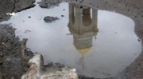
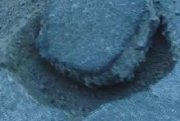
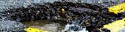
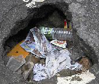
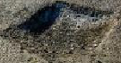
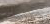
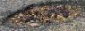
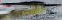
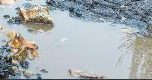

#0 score 0.66 · PLANTED
potholes1
potholes1
每個「被標成 pothole」的框,用真 DINOv2 取嵌入,標出外觀最不像 pothole 群的(=疑似標錯/框到別的東西)。下面是 DINO 判定的前 12 名離群標註(分數越高越可疑);我們故意種了 3 個明顯標錯(畫在天空/路面上)驗證 DINO 抓得到。
PROXY:DINO 也是模型的判斷,需人工覆核、勿自動改標。pixel_fallback 嵌入做不到這件事 —— 這就是為什麼這半需要 DINO。










